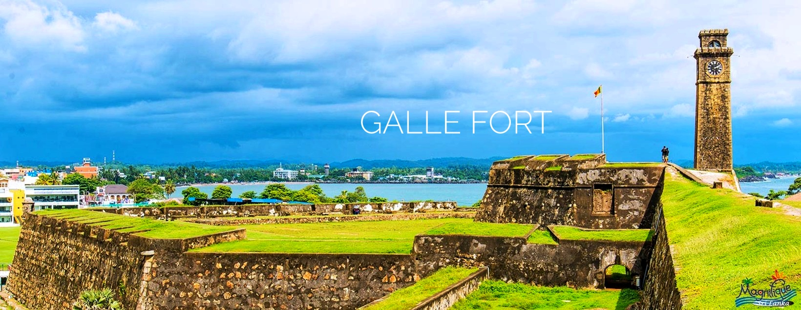
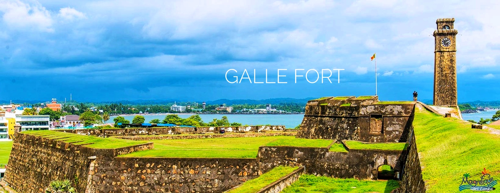

Ella is a small town in the Badulla District of Uva Province, Sri Lanka governed by an Urban Council. It is approximately 200 kilometres east of Colombo and is situated at an elevation of 1,041 metres above sea level. Laid-back Ella draws travelers to Sri Lanka's highlands with its mountain forests, tea plantations, and relatively cool climate. The wildlife-rich region is also home to caves, cascades, and secluded temples. There are many places to explore in Ella. Nine Arch Bridge , Little Adams's Peak , Hike up to Ella Rock , exploring Diyaluma Falls are some of the eye catching destinations.


 
